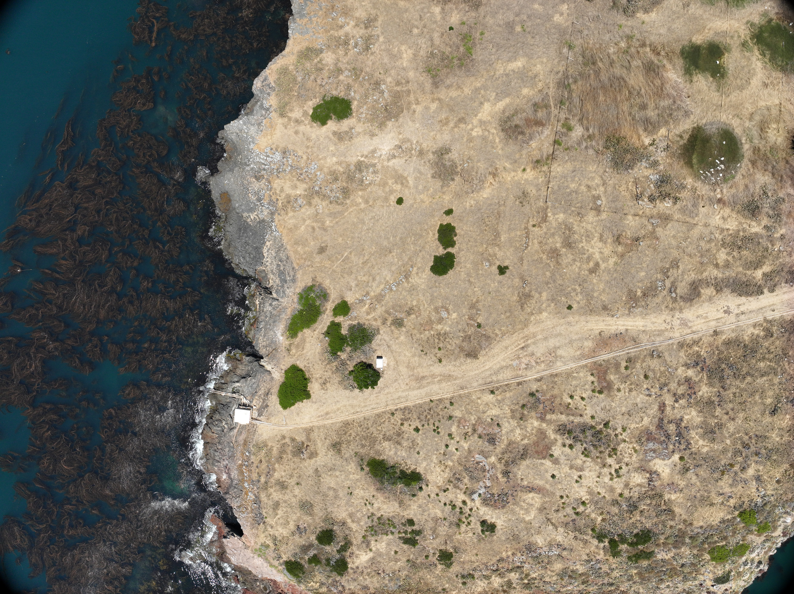
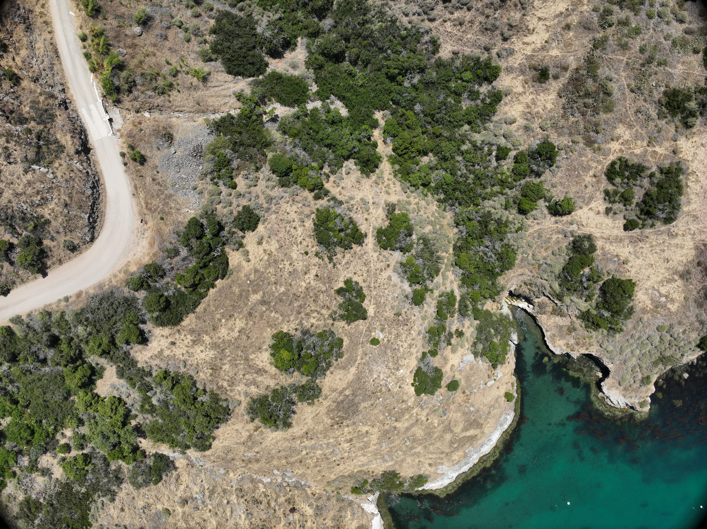
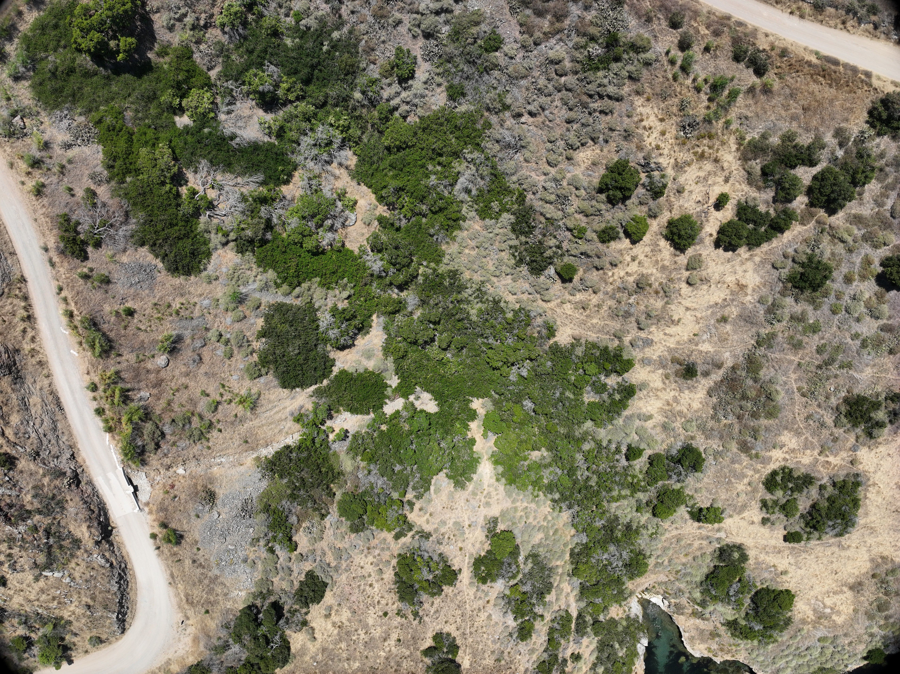
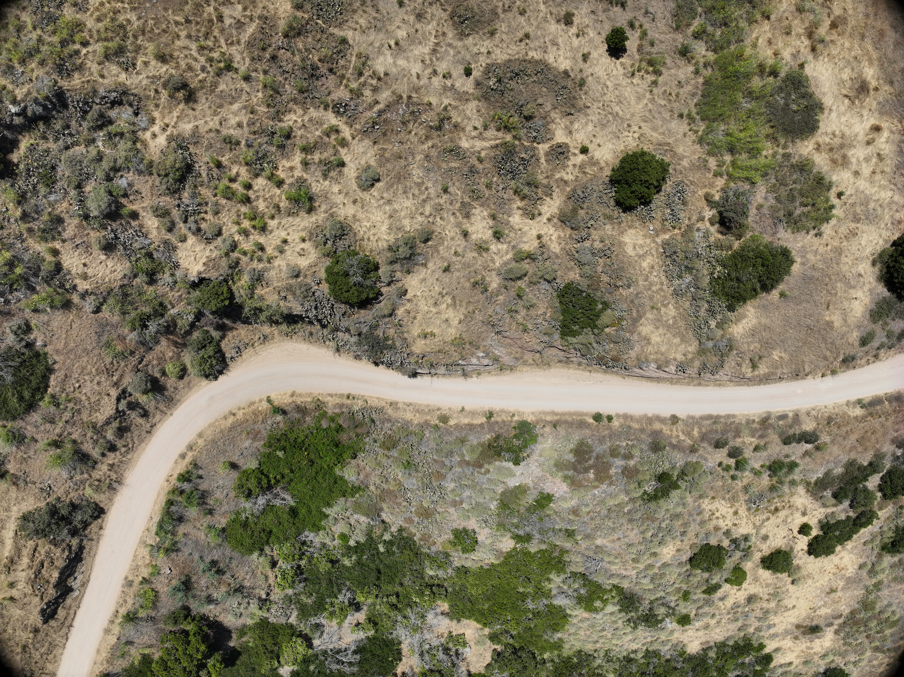
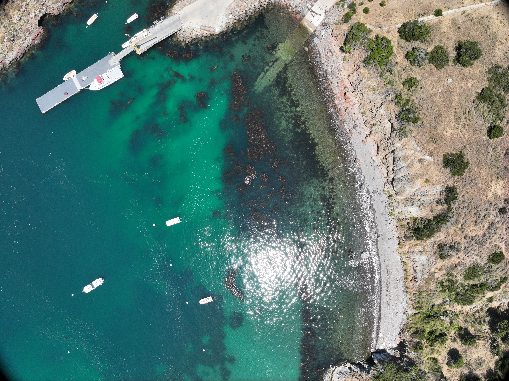
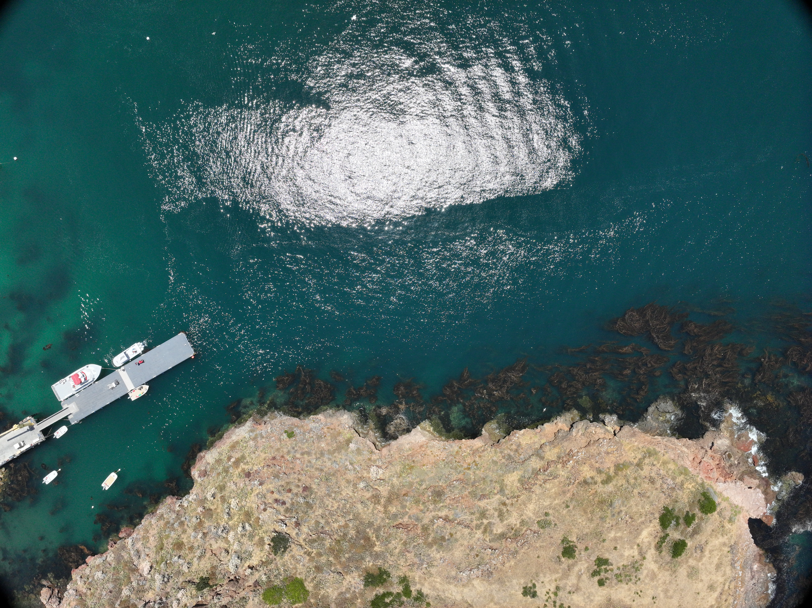
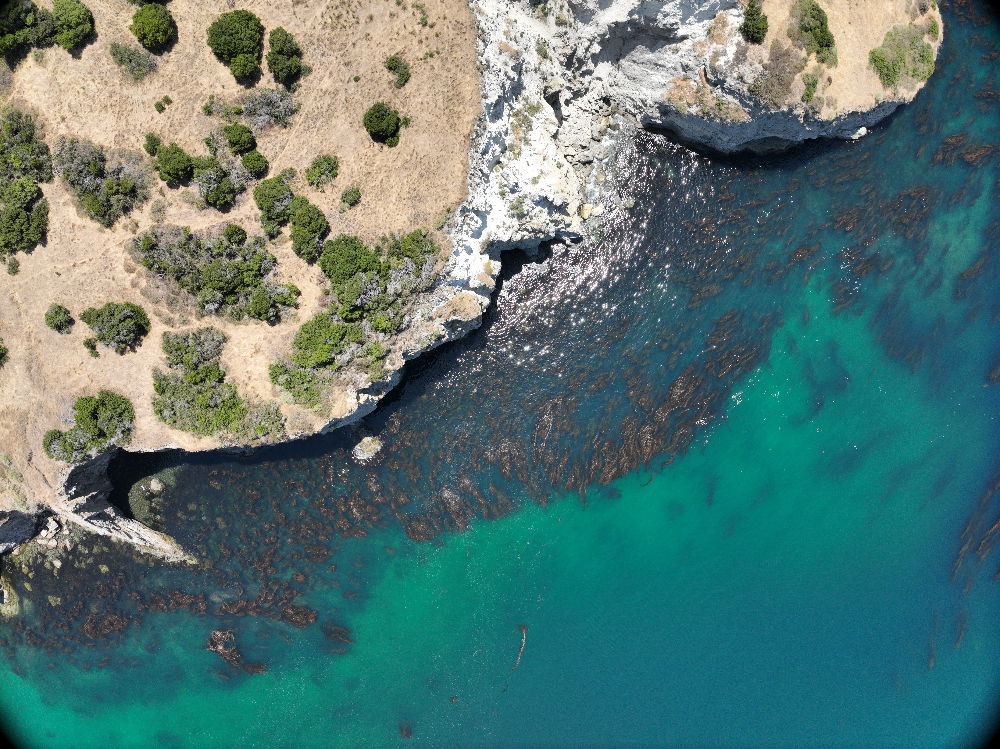
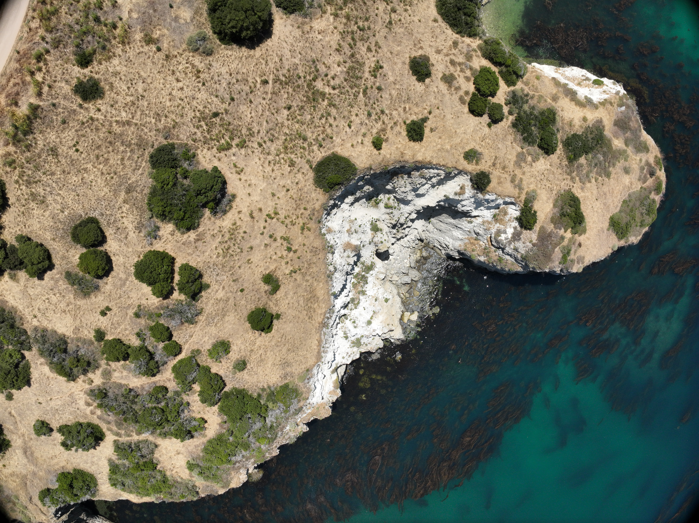
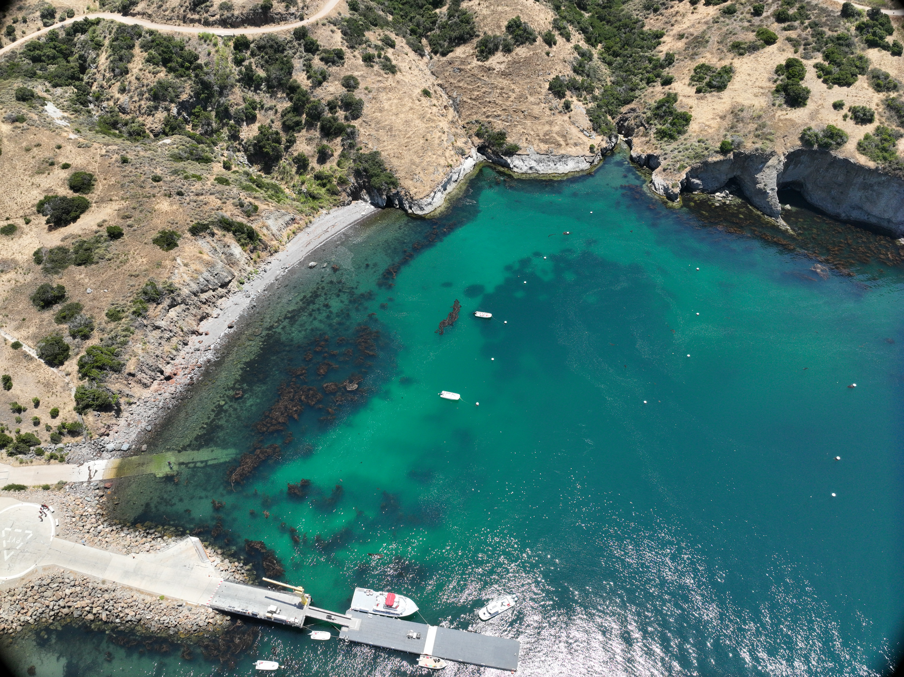

Overview
Catalina Island's coastlines are continuously shaped by natural forces — waves, sediment transport, and seasonal storm activity. Coastal erosion at the USC Marine Reserve poses risks to both marine habitats and the infrastructure of the Wrigley Institute. This project compares past and present coastal topography to detect where significant erosion has occurred at Fishermans Cove between 2015 and 2025.
Using USGS LiDAR point cloud data from 2015 and drone-derived Digital Elevation Models from 2024 and 2025 flights with a DJI Mavic 3M, we created spatially aligned DEMs and applied raster differencing to map elevation gain and loss — identifying the most erosion-prone zones along the eastern and western portions of the cove.
ArcGIS StoryMap

Resolution — Drone vs. LiDAR
One of the core technical challenges was the enormous resolution difference between the two data sources. Drone imagery captured at centimeter-level detail had to be aggregated to match the foot-level resolution of the historical LiDAR data before any meaningful comparison could be made.
Processed in Drone2Map
Processed in ArcGIS Pro
The drone data is approximately 71× more detailed than LiDAR by linear resolution. Aligning these datasets required aggregating drone imagery to 1ft cells — preserving enough detail for meaningful subtraction while enabling direct comparison across data sources and time periods.
Data Processing Workflow
-
01
Historical LiDAR processing
USGS LiDAR point cloud data uploaded to ArcGIS Pro. Digital Elevation Model created at 1ft × 1ft resolution. Hillshade tool applied to generate a shaded relief raster highlighting elevation changes across Fishermans Cove.
-
02
Drone flight and photogrammetry (2024 & 2025)
Drone flights conducted with DJI Mavic 3M over the eastern and western portions of Fishermans Cove. Imagery processed in Drone2Map to generate point clouds and DEMs at 0.014ft resolution.
-
03
Resolution alignment & interpolation
Drone DEM aggregated to 1ft cells to match LiDAR resolution. LiDAR data interpolated to achieve consistent 1ft × 1ft coverage across point cloud gaps. Both datasets reprojected to a common coordinate system.
-
04
DEM differencing — Minus tool
ArcGIS Pro's Minus tool subtracted the 2015 LiDAR DEM from both the 2024 and 2025 drone DEMs. Positive values indicate elevation gain; negative values indicate erosion / surface lowering.
Processing Steps — ArcGIS Pro

LiDAR point cloud loaded in ArcGIS Pro — raw USGS data before DEM creation.

LiDAR DEM generated at 1ft resolution from the point cloud.

Hillshade rendering applied to the LiDAR DEM — reveals terrain texture and elevation gradients.

Drone-derived DEM from Drone2Map loaded into ArcGIS Pro for alignment.

Drone DEM aggregated to 1ft cells to match LiDAR resolution before differencing.

LiDAR interpolation applied to fill gaps in the point cloud coverage.

DEM alignment verification — confirming both datasets share the same coordinate system and extent.

Minus tool applied — subtracting LiDAR 2015 from drone 2024 DEM to produce the difference raster.

DEM difference raster — initial result showing areas of elevation change across Fishermans Cove.
Image Comparisons — Drag to Compare
Drag the handle left or right to reveal and compare each dataset pair. Five comparisons show resolution differences, temporal change, and the effect of interpolation.


DEM Difference Results — Erosion & Gain

DEM difference raster — elevation change across the full Fishermans Cove study area.

Erosion zone detail — highest-loss areas concentrated along the eastern cliff faces and sediment transport corridors.

Gain and loss classified — symbology applied to distinguish net erosion from deposition zones.

Eastern cove difference map — areas of net elevation loss correlate with wave-facing cliff exposures.

Western cove difference map — sediment accumulation near the Wrigley Institute dock offset by erosion on exposed headlands.
Field Documentation — Drone Photography (2024)
Imagery captured during the 2024 DJI Mavic 3M survey flights over Fishermans Cove, providing visual context for the elevation changes detected in the DEM analysis.

Fishermans Cove from altitude — full cove extent and Wrigley Institute dock visible.

Coastal boundary — land-water interface showing wave-cut platform and rocky shoreline.

Eastern cliff face — actively eroding surface consistent with high-loss zones in the DEM difference maps.

Sediment transport patterns — sand and gravel deposits visible at the base of erosion zones.

Western cove — proximity to the USC Wrigley Institute infrastructure makes erosion monitoring critical.

High-resolution surface texture — individual rocks and sand features captured at 0.014ft by the Mavic 3M.

Survey flight — automated grid pattern over the eastern portion of the cove.
Oblique view — coastline profile showing vertical cliff relief and beach width.

Full cove overview from the final waypoint of the 2024 survey mission.
Drone2Map processing — photogrammetric point cloud generated from overlapping drone imagery.
Limitations
- Vegetation inclusion in DEMs. Drone2Map may have included vegetation canopy in the elevation model rather than bare ground — causing apparent "elevation gain" in vegetated areas that reflects plant growth rather than actual land surface change.
- Interpolation errors. Interpolation to bring the LiDAR DEM to 1ft × 1ft resolution introduced slight smoothing errors, particularly at steep surfaces and water-land transitions where LiDAR returns were sparse.
- Instrument accuracy differences. Converting 2D imagery to 3D models introduces uncertainty that differs fundamentally from active LiDAR sensing. Cross-instrument comparison amplifies these uncertainties at fine-scale features.
- Resolution mismatch artifacts. Despite aggregation, the fundamental difference in data collection methods can produce systematic offsets that appear as false erosion or deposition patterns in the difference rasters.
Next Steps
This project establishes a baseline workflow for ongoing coastal monitoring at the USC Wrigley Institute. Future directions include integrating additional environmental variables — wave energy data, seasonal wind patterns, soil type — to understand which factors most strongly predict where erosion concentrates along the cove. Repeating drone flights annually would build a time-series dataset enabling statistical trend analysis rather than point-in-time comparison.